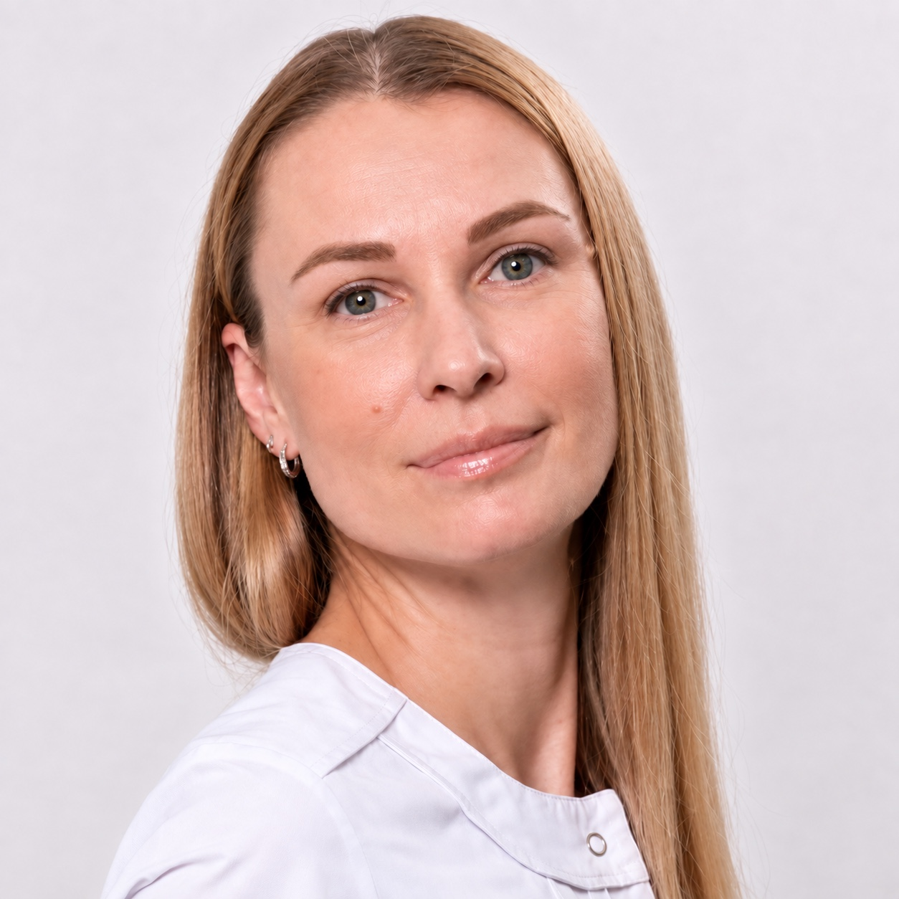
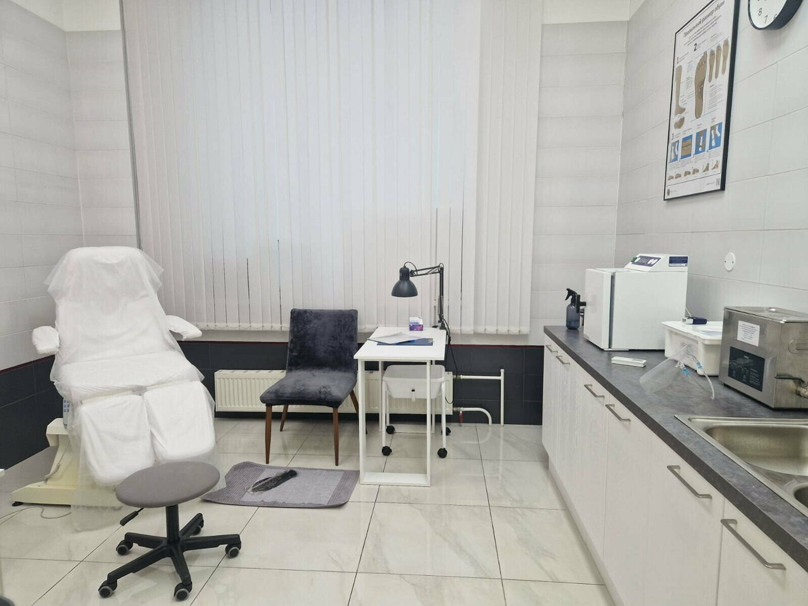
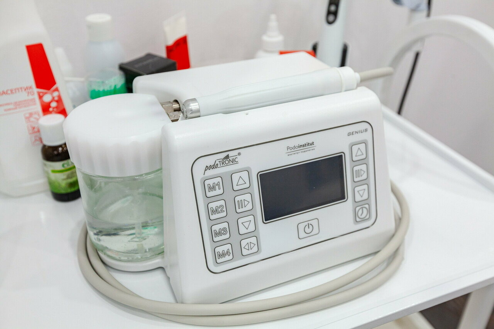
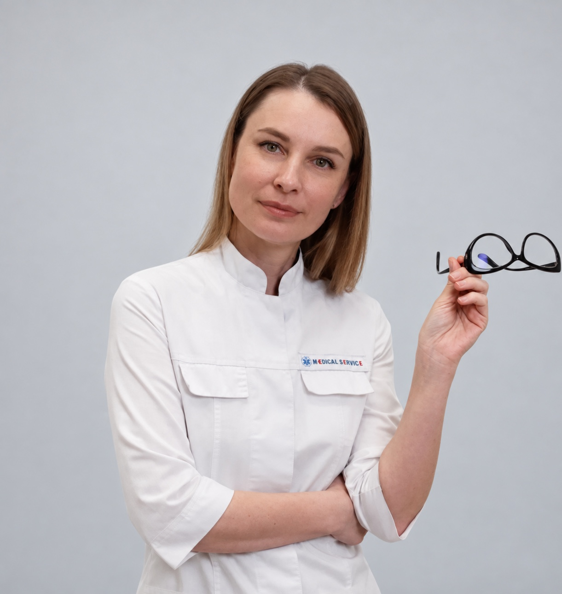
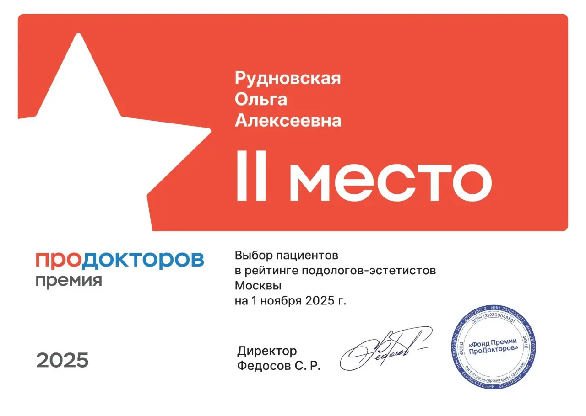
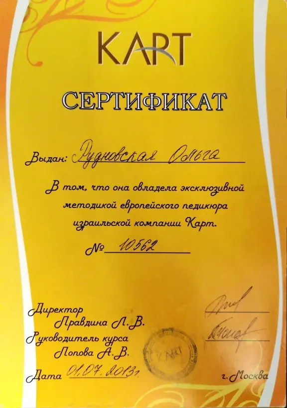
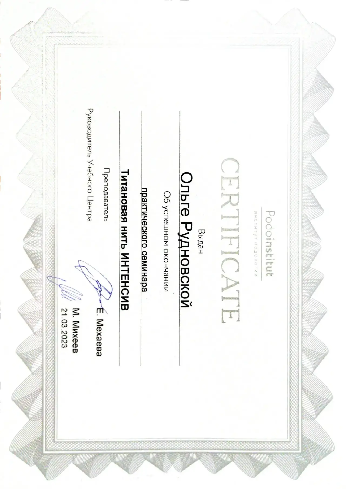
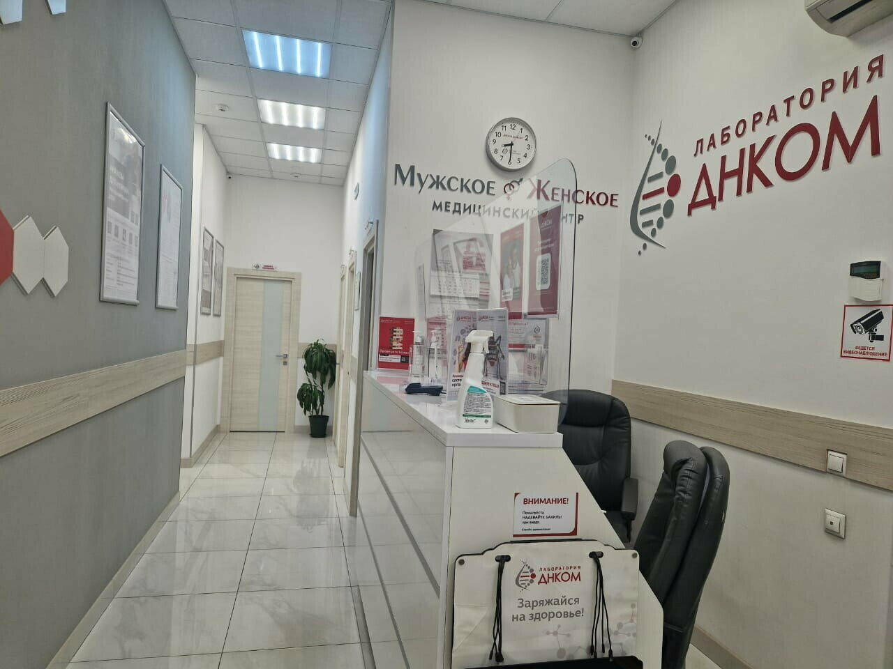

Частная практика · Москва
Ольга
Рудновская
Подолог — уход за стопами и ногтями
Меня зовут Ольга Рудновская: я специалист-подолог.
Если вы заметили изменения в цвете или структуре ногтей, если они пожелтели, потемнели или начали слоиться, то я могу вам помочь вернуть им здоровье и красоту.
Также я работаю со стопами: устраняю трещины, мозоли и другие проблемы, которые могут вызывать боль или дискомфорт. В своей работе я использую современное и дорогостоящее оборудование со спреем, которое позволяет проводить процедуры без боли и неприятных ощущений.
А ещё я устанавливаю коррекционные системы и протезирую ногтевые пластины, чтобы вернуть вашим ногтям здоровье.
ПН–СБпо предварительной записи
ВС — выходной
ВС — выходной
МоскваБоровское шоссе, 2А, к. 3
Услуги специалиста в частном кабинете не являются медицинскими услугами.

Индивидуальный приёмПрофильное обучениеРеальный кабинетПонятный прайс
01 · Услуги
Основные направления
Ключевые направления и актуальная стоимость. Полный перечень собран на отдельной странице цен.
012 500 ₽
02от 6 000 ₽
03от 2 500 ₽
04от 2 500 ₽
05от 8 000 до 12 000 ₽
Смотреть полный прайс Консультация
Дезинфекция стоп и ногтей, визуальный осмотр, оценка состояния. 30 минут.
Педикюр
Гигиенический уход за стопами и ногтями. Стоимость зависит от категории.
Обработка ногтевых пластин
Гигиеническая обработка поражённых или деформированных ногтевых пластин.
Вросший ноготь
Обработка с одной или двух сторон и коррекционные системы по показаниям запроса.
Сложный педикюр
Уход, включая работу с трещинами и деформированными ногтевыми пластинами.
02 · С какими запросами обращаться
В каких случаях стоит обратиться к подологу
Обратиться к подологу имеет смысл, если вы заметили у себя что-то из перечисленного.
- Изменение цвета или структуры ногтя
Пожелтение, потемнение, расслоение, утолщение.
- Вросший ноготь
Боль при ходьбе, покраснение, дискомфорт в области ногтевого валика.
- Грибковые инфекции
Изменение ногтя, кожи вокруг, неприятный запах.
- Деформация ногтевой пластины
После травмы, ношения неудобной обуви или как следствие других состояний.
- Трещины, мозоли, натоптыши
Особенно если они болят или не проходят самостоятельно.
- Диабетическая стопа
Для профилактики язв и правильного ухода за ногтями и кожей.
- Желание восстановить эстетичный вид ногтя
Например, после неудачного педикюра или самостоятельного вмешательства.
- Сложные случаи
Когда домашние средства не помогают и ситуация повторяется.
Если вы не уверены, нужна ли помощь, — можно записаться на консультацию. Специалист осмотрит, объяснит, что происходит, и подскажет, что делать дальше. Главное — не запускать ситуацию и не заниматься самолечением, которое часто приводит к ухудшению.


03 · Подход
Работа в рамках компетенции подолога
Задача подолога — аккуратно провести необходимую обработку, обратить внимание на возможные причины изменений и при необходимости рекомендовать обращение к профильному врачу.
01Визуальная оценка и понятное объяснение
02Подологическая обработка и коррекционные системы
03При необходимости — рекомендация обратиться к врачу
Практика
Примеры моих работ
Все работы ↗Работа с ногтевой пластиной
Результат индивидуален и зависит от нашей совместной работы.
Важно
После приёма
- Соблюдайте рекомендации.
- Не занимайтесь самолечением.
- При необходимости обратитесь к врачу.
- Соблюдайте план посещения подолога.
Помните: подолог — не волшебник. Результат зависит от нашей совместной работы.
04 · О специалисте
Ольга
Рудновская
Среднее профессиональное медицинское образование по специальности «Сестринское дело», профильное обучение и профессиональная переподготовка «Общая практика» в 2026 году.
Образование и документы
2006Московский медицинский колледж № 1
«Сестринское дело»
«Сестринское дело»
2023–2024Профильное обучение Podoinstitut
2026Профессиональная переподготовка
«Общая практика»
«Общая практика»
05 · Документы и доверие
Подтверждённые факты,
а не рекламные цифры



«Очень профессионально выполняет свою работу. Я артистка балета, поэтому периодически возвращаюсь к Ольге.»
«Тактичная, профессиональная. Перед процедурой всё объясняет. В кабинете чисто и аккуратно.»
«После первого посещения стало значительно легче. Получила рекомендации по обуви. Кабинет чистый.»
Кабинет расположен в одном помещении с лабораторией ДНКОМ. При необходимости лабораторные исследования можно пройти по тому же адресу; их выполняет непосредственно ООО «ДНКОМ». Ольга Рудновская не является сотрудником лаборатории.
Москва,
Боровское шоссе, 2А, корпус 3
Кабинет расположен в одном помещении с лабораторией ДНКОМ. Это ориентир для входа; Ольга Рудновская не является сотрудником лаборатории.

Запись на приём
Есть вопрос по стопам
или ногтям?
Напишите в WhatsApp, Telegram, MAX или позвоните. Запись ведётся с понедельника по субботу по предварительной договорённости.
TelegramMAX: +7 929 540-06-67 — найдите контакт по номеру.